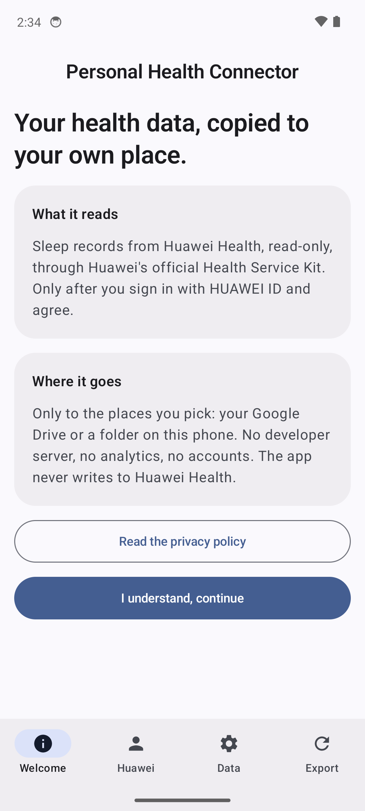
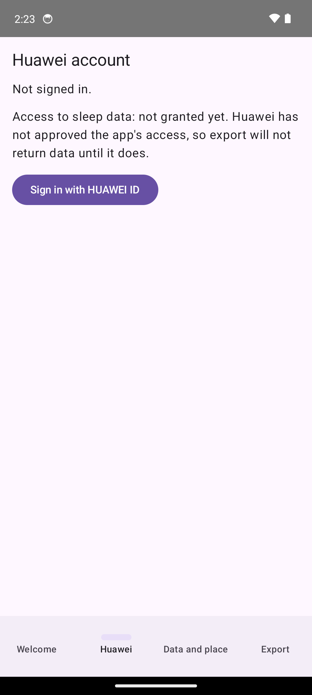
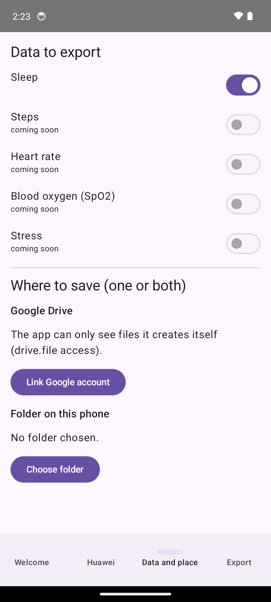
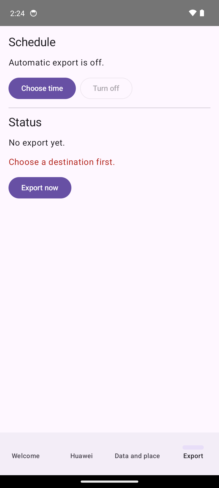

Applicant type: individual developer (identity verified on HUAWEI Developers). Product: Personal Health Connector, package app.personalhealthconnector, app ID 120011809. Source code, privacy policy and user agreement are public: https://github.com/skywardpro/personal-health-connector
Data the app applies for on the Health Service Kit platform and the corresponding usage scenarios.
| Permission | Usage scenario and requirements | Usage purpose | Client / iOS | Development completion |
|---|---|---|---|---|
| Read sleep data (healthkit/sleep.read) |
Read the user's own sleep records (sleep duration, light/deep/REM time, awake time, wake-up count, sleep score, fall-asleep and wake-up times) and save them as raw JSON, one file per day, into the user's own Google Drive folder or a folder on the user's phone. Read only; nothing is written to Huawei Health. | Let the user keep a personal, portable copy of their own sleep data and analyse it in their own tools, bots and AI assistants. The developer runs no server and receives no data. | Android mobile app (third-party Android). iOS: not supported. | 2026-11-28 |
| Read historical data | Read the user's earlier recorded sleep nights once on first run after consent, then each new night incrementally. Same sleep data types as above; no other data types. | Without historical access the app could only export nights recorded after installation and the user could not build a complete personal archive. Historical data is used only for the one-time initial export to the user's own drive and for the user's own long-term analysis (weekly, monthly, yearly trends in their own tools). It is not shown to anyone else, not shared and not kept by the developer. | Android mobile app. iOS: not supported. | 2026-11-28 |
Remarks: only the sleep read permission and the historical data permission are requested (data minimization). Data synchronization is not used. The app is not a medical product.
Current debug build on an Android emulator. The Huawei access state is shown as "Not granted yet" because the application is pending.




Not applicable: the applicant is an individual developer, not an enterprise. Individual developers apply for basic-level data scopes only; no advanced-level scope is requested.
| Application introduction | Personal Health Connector is a free, open-source Android app that lets a user export their own raw health data from Huawei Health to a file in their own cloud drive or a folder on their phone, for personal use and for the user's own tools, bots and analysis apps. The developer runs no server and receives no user data. Each user accesses only their own data. |
| Application industry | Health and fitness / personal data tool (utility) |
| Purpose of scope application | The sleep read scope is used to export the user's own sleep records as raw JSON to the user's own drive. The historical data scope is used for a one-time initial export of earlier nights, followed by incremental export of new nights. No data is shown to or shared with anyone other than the user. Medical use: none. |
| Project leader for Huawei-side connection | Mikita Plotnikau, mail@skyward.pro |
| Cooperation details | None. |
| Purchasing needs | No. |
| Self-check content | Result |
|---|---|
| Countries this app serves | Countries/regions on the official "Supported Countries/Regions (Basic Capabilities)" list of Health Service Kit. Users need a HUAWEI ID registered in one of them. |
| Commercial release or demo | Non-commercial release. Free open-source utility; planned release on AppGallery. |
| Application types to access Health Service Kit | Android mobile app (third-party Android). |
| Access method | Android Java API (device-side SDK). |
| Do the applied permissions meet the needs | Y |
| Medical treatment involved | N. The app only exports raw data and gives no diagnosis or medical advice. |
| Expected authorized users and TPS | One test user (the developer), up to the 100-user test limit; a few requests per user per day, TPS far below 1. |
| Real-time data required | N |
Privacy policy: https://skywardpro.github.io/personal-health-connector/PRIVACY | User agreement: https://skywardpro.github.io/personal-health-connector/TERMS